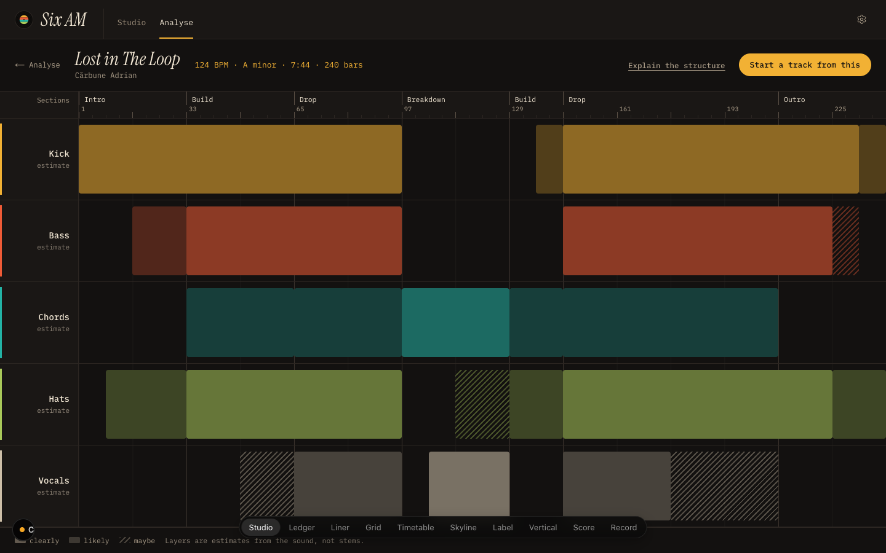
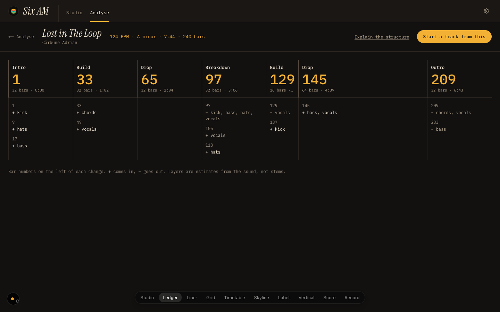
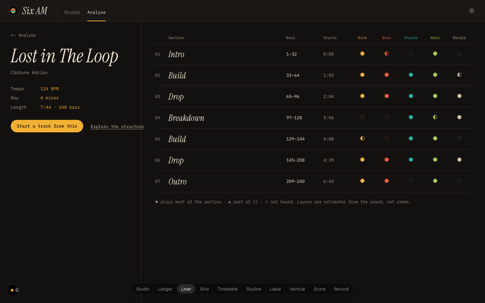
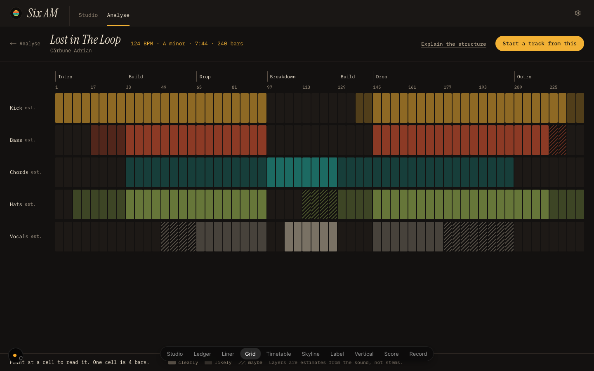
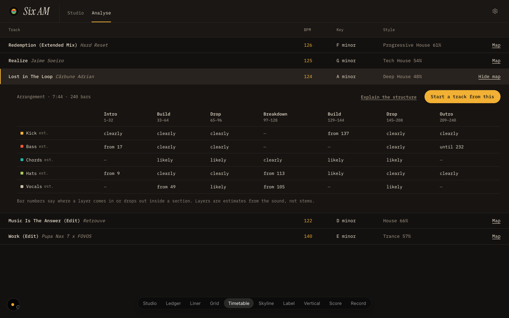
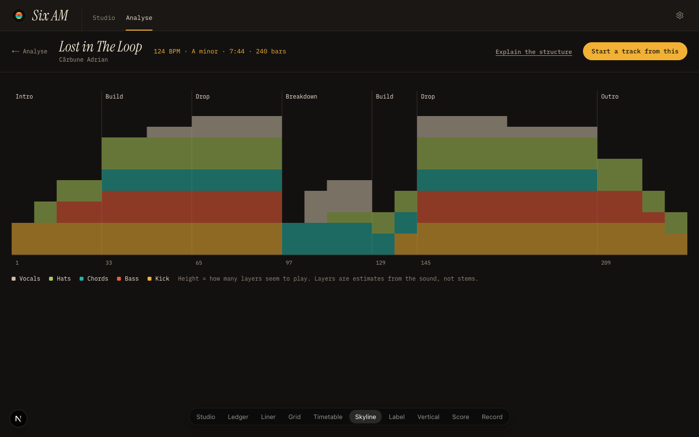
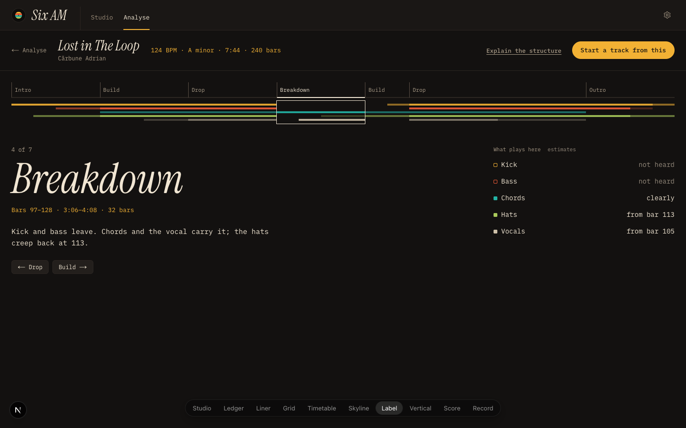
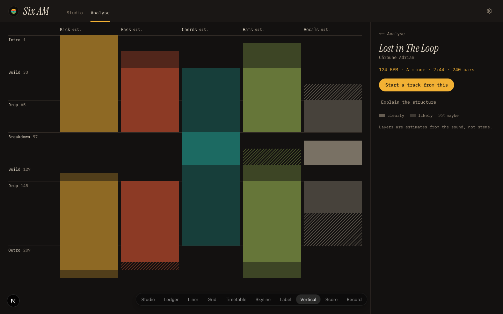
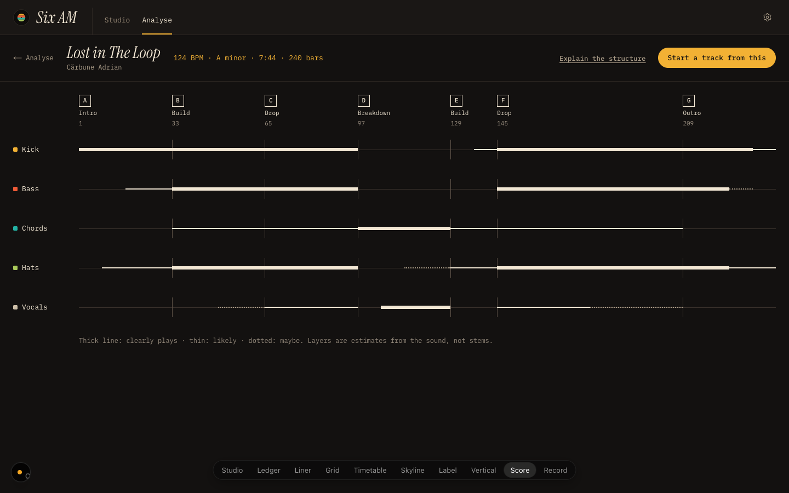
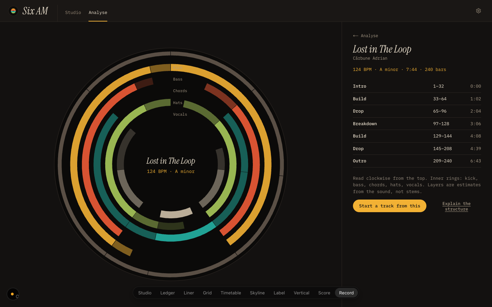

Six AM · Arrangement map, ten directions
Rough prototypes, same track in each: Lost in The Loop, 124 BPM, A minor, 7:44, 240 bars. Pick three. Tap an image for full size. Extra: direction 1 while listening .

1 Studio The Studio's own timeline, reused: five lanes with blocks where each layer seems to play, sections on the ruler. (seed 1)

2 Ledger Text first: a section strip with big bar numbers, and under each section the changes in words (+ bass at 17). (seed 2)

3 Liner notes The back of a record sleeve: title and facts on the left, sections as a tracklist with a dot per layer. (seed 3)

4 Phrase grid One cell per 4-bar phrase, five rows: a step-sequencer view; point at a cell to read it. (seed 4)

5 Timetable Opens inside the Analyse list under the track's row: layers × sections as a timetable of words.

6 Skyline All layers stacked into one silhouette, so the shape of builds, drops and breakdowns reads at a glance.

7 Wall label One section at a time, like a museum label: a mini-map on top, the chosen section large with what plays there.

8 Vertical Sounds wrong: the track runs down the page like a DJ's vertical waveform, layers as columns.

9 Score Sounds wrong: a conductor's score in ivory ink, staves per layer, rehearsal marks A to G for the sections.

10 Record Sounds wrong: the track as a disc read clockwise from the top; sections on the rim, layers as inner rings.